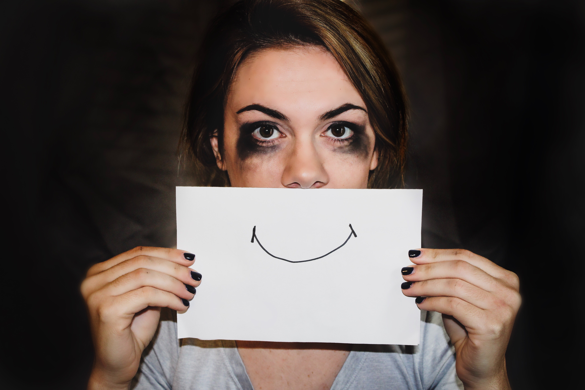

Safety At Home: An Oxymoron For Many
 Photo by Sydney Sims on Unsplash
While Coronavirus is grappling the world tipsy turvy, there is another "Shadow Pandemic" which is screeching from the houses of millions. "Domestic Violence" from America to Africa, from Europe to south Asia; today there is no country which has not witnessed the surge in it in the past few weeks, A well-documented evident that during the times of crisis women bodies bear the most brunt and yet their ordeal are never heard proactively in the galleries of crisis management by the authorities.
Today governments across the globe are saying safety of a person is at their respective home but the same home and safety has become an oxymoron for many, Domestic violence is deeply rooted in the inequalities of power and control and the parochial thinking of society which makes women an easy meat for "Men" to assert their notion of Masculinity, resorting to torcher physically, psychologically, sexually; when we Dwelling upon the reasons for the manifold increase we see the following plausible reasons:
- As there is a prohibition on selling of liquor, there is a surge in the cases Withdrawal symptoms by many men which is make them restive and they are resorting to violence as a result of denial.
- No-jobs at hand and as they say empty minds is a devils home, but here devil himself is personating in the form of man.
- Interaction time between both the genders has increased which is making women more vulnerable to violence.
- All these factors mount to sheer mental health problems which is not duly recognized by the families and as a result women becomes the victim of their frustration and anger.
Exigent Issues demands urgent solution
UN Women Organization has called upon the member states to step up and provide help line numbers, counseling sessions, SMS alerts to the depressed and vulnerable sections, Leading by example in this field is France which is providing monetary support to the organizations working in this field and giving the staff permission to work on the ground, British activist are demanding the same from their government, Spain and France has come up with code word "Mask19" which can be used by women at nearby pharmacy which will the alert the local authorities.
Eyes on India
India, a nation where 24% of women face domestic violence on a regular scale and undoubtedly this percentage might have shoot up during the lockdown, Taking the cognizance of this issue National Commission of Women along with Ministry of Women and Child development came up with helpline number which will work even on WhatsApp, SMS for Rural areas, Technology driven solution to provide online counselling to the victims and offender;
A step forward in this a network of counsellors is being formed and government have sought the help of UN women for this.
All this steps are welcoming but there is still much more do, Authorities are presuming many things, until awareness is made on this not all the women will come to know, Advertisements which is such a great tool for the communication should be expanded especially from the likes of TV advertisements, phone calls, Alas the fight against shadow Pandemic should be abridged with the fight against Covid19, it should be brought under the Agenda.
Pune Zilla parishad is setting up a model where institutional quarantines have been made for the perpetrators of violence and a vigilance committee comprising members of 3 agencies i.e. Ministry of Women and child care development, Anganwadi workers and self-help groups is made, there duty is to reach out all homes and track the domestic violence cases in their areas.
The raging pandemic at homes is engulfing millions and as a nation with nearly 50% population of women we should not allow their nights to turn gloomy and their mornings to turn into horror, under our eyes.